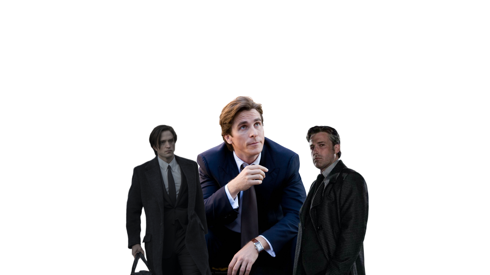

BATMEN
The Batman
Batman is a superhero appearing in American comic books published by DC Comics. The character was created by artist Bob Kane and writer Bill Finger, and debuted in the 27th issue of the comic book Detective Comics on March 30, 1939. In the DC Universe continuity, Batman is the alias of Bruce Wayne, a wealthy American playboy, philanthropist, and industrialist who resides in Gotham City. Batman's origin story features him swearing vengeance against criminals after witnessing the murder of his parents Thomas and Martha as a child, a vendetta tempered with the ideal of justice. He trains himself physically and intellectually, crafts a bat-inspired persona, and monitors the Gotham streets at night. Kane, Finger, and other creators accompanied Batman with supporting characters, including his sidekicks Robin and Batgirl; allies Alfred Pennyworth, James Gordon, and Catwoman; and foes such as the Penguin, the Riddler, Two-Face, and his archenemy, the Joker.
Kane conceived Batman in early 1939 to capitalize on the popularity of DC's Superman; although Kane frequently claimed sole creation credit, Finger substantially developed the concept from a generic superhero into something more bat-like. The character received his own spin-off publication, Batman, in 1940. Batman was originally introduced as a ruthless vigilante who frequently killed or maimed criminals, but evolved into a character with a stringent moral code and strong sense of justice. Unlike most superheroes, Batman does not possess any superpowers, instead relying on his intellect, fighting skills, and wealth. The 1960s Batman television series used a camp aesthetic, which continued to be associated with the character for years after the show ended. Various creators worked to return the character to his darker roots in the 1970s and 1980s, culminating with the 1986 miniseries The Dark Knight Returns by Frank Miller.
CHRISTIAN BALE - The Dark Knight
Christian Bale's portrayal of Bruce Wayne in Christopher Nolan's Batman trilogy is widely regarded as one of the most compelling and nuanced depictions of the character. Bale effectively captures the complex duality of Wayne's persona as a billionaire playboy by day and the dark, brooding vigilante by night. As Bruce Wayne, Bale brings a depth of emotion and internal conflict, portraying a man haunted by the murder of his parents and driven by a desire for justice. He convincingly presents Wayne's public facade as a charming and charismatic individual while also conveying the underlying pain and trauma that motivates his alter ego, Batman. With Bale's performance, Wayne's journey from a vengeful and impulsive figure to a symbol of hope and redemption becomes a central theme, making him a relatable and compelling protagonist.
When it comes to portraying Batman, Christian Bale's dedication and physical transformation are truly remarkable. He brings a fierce intensity to the role, both in terms of his physicality and his commitment to justice. Bale's Batman is a force to be reckoned with, displaying incredible combat skills, agility, and gadgetry. He perfectly captures the Dark Knight's relentless pursuit of criminals, embodying the gritty and determined nature of the character. Bale's deep, raspy voice as Batman adds an extra layer of intimidation, striking fear into the hearts of his adversaries. His portrayal also highlights Batman's strategic thinking and detective skills, showcasing a hero who is not just reliant on his physical prowess, but also on his intellect and resourcefulness. Overall, Bale's performance as Batman solidifies the character's iconic status and leaves a lasting impression on audiences.
BEN AFFLECK- The Caped Crusader
Ben Affleck's portrayal of Bruce Wayne in the DC Extended Universe offers a captivating and mature interpretation of the character. Affleck brings a sense of world-weary sophistication to Bruce Wayne, showcasing a billionaire playboy who hides his inner turmoil behind a charming facade. Affleck effectively portrays the weight of Bruce Wayne's past, including the loss of his parents and the burden of protecting Gotham City. He conveys a sense of deep-rooted pain and determination, illustrating a Bruce Wayne who has experienced significant hardships but remains resolute in his mission to fight crime. Affleck's portrayal captures the essence of a seasoned vigilante, highlighting Bruce Wayne's intelligence, resourcefulness, and commitment to justice.
His portrayal of Batman in the DC Extended Universe presents a formidable and physically imposing Dark Knight. Affleck embodies Batman's sheer power and intensity, showcasing a highly skilled combatant who strikes fear into the hearts of criminals. His portrayal emphasizes Batman's brutality and unwavering dedication to protecting Gotham City. Affleck's Batman is not only a master of martial arts but also a strategic thinker and technological genius, utilizing advanced gadgets and vehicles to aid in his crime-fighting efforts. His deep, raspy voice adds an additional layer of intimidation, creating an aura of fear around the character. Affleck's performance as Batman delivers a compelling interpretation of the iconic superhero, capturing the essence of the brooding and relentless nature of the Dark Knight.
ROBERT PATTINSON- The Vengeance
Robert Pattinson's upcoming portrayal of Bruce Wayne in Matt Reeves' "The Batman" promises a fresh and intriguing approach to the character. Based on early glimpses and trailers, Pattinson's Bruce Wayne appears to be a younger and more vulnerable version of the character. He portrays Bruce Wayne as a complex and conflicted individual, haunted by his past and driven by a sense of justice. Pattinson's performance is expected to bring forth a Bruce Wayne who is still discovering his purpose and identity, exploring the origins of Batman and his transformation into a symbol of hope. This portrayal offers an opportunity to delve into the psychological depths of the character and showcase the inner struggles that shape Bruce Wayne's journey.
While specific details are still limited, Robert Pattinson's portrayal of Batman in "The Batman" is anticipated to bring a fresh and gritty interpretation of the Dark Knight. Early glimpses suggest a Batman who is agile, relentless, and driven by a desire to rid Gotham City of crime. Pattinson's performance is expected to highlight Batman's detective skills and his resourcefulness as a crime-fighter. This portrayal may emphasize the character's vulnerabilities, showcasing a Batman who is still learning and adapting to the challenges he faces. Pattinson's Batman is likely to be a complex and multi-dimensional hero, offering a new perspective on the iconic vigilante and adding depth to the character's legacy.
CONCLUSION
In conclusion, the portrayals of Batman by Christian Bale, Ben Affleck, and Robert Pattinson have each left a significant mark on the iconic character, showcasing their individual strengths and interpretations. Christian Bale's performance in Christopher Nolan's Batman trilogy is widely regarded as a groundbreaking portrayal. Bale effectively captures the complex duality of Bruce Wayne's persona, presenting a billionaire playboy by day and a dark, brooding vigilante by night. His portrayal resonates with audiences due to the depth of emotion and internal conflict he brings to the character. Bale's Bruce Wayne is a man haunted by the murder of his parents and driven by a relentless desire for justice. As Batman, he displays incredible physicality and combat skills, embodying the gritty and determined nature of the Dark Knight. Bale's deep, raspy voice adds an extra layer of intimidation, making his Batman a force to be reckoned with.
Ben Affleck's portrayal of Batman in the DC Extended Universe offers a different take on the character. Affleck presents a mature and world-weary Bruce Wayne, burdened by the weight of his past and the responsibility of protecting Gotham City. Affleck effectively showcases the complexities of Bruce Wayne's character, hiding his inner turmoil behind a charming facade. His Batman exudes power and intensity, striking fear into the hearts of criminals. Affleck's performance emphasizes Batman's brutality and unwavering dedication to his mission. He is not only a master of martial arts but also a strategic thinker and technological genius, utilizing advanced gadgets and vehicles in his crime-fighting efforts. Affleck's portrayal contributes to the darker and more brooding side of Batman's persona, adding depth and complexity to the character.
Looking ahead, Robert Pattinson's upcoming portrayal of Batman in Matt Reeves' "The Batman" promises a fresh and intriguing approach. Based on early glimpses and trailers, Pattinson's Bruce Wayne appears to be a younger and more vulnerable version of the character. He brings a sense of complexity and inner turmoil to Bruce Wayne, haunted by his past and driven by a relentless pursuit of justice. Pattinson's performance is expected to explore the psychological depths of Batman, showcasing a hero who is still discovering his purpose and identity. This portrayal offers an opportunity to delve deeper into the origins of Batman and his transformation into a symbol of hope. Pattinson's Batman is anticipated to be agile, relentless, and driven by a desire to rid Gotham City of crime. His portrayal is expected to highlight Batman's detective skills and resourcefulness as a crime-fighter, adding a fresh and gritty interpretation to the character.
In summary, Christian Bale, Ben Affleck, and Robert Pattinson have each contributed to the Batman legacy with their unique portrayals. Bale's emotionally-driven performance, Affleck's mature and formidable portrayal, and Pattinson's anticipated fresh approach have solidified the character's iconic status. Each actor has left an indelible mark on the Dark Knight's mythology, showcasing different aspects of Batman's character and ensuring that his legacy continues to evolve and captivate audiences.